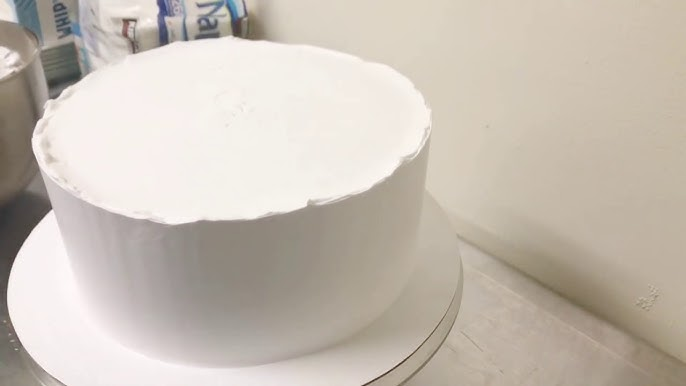

← Volver al módulo 5

Alisado y Bañado de Torta
Técnica para cubrir y alisar tortas usando crema, mangas, boquillas y colorantes, logrando una decoración uniforme y profesional.
Materiales
- Maqueta de plasto formó
- Cinta de embalaje
- Crema de gusto
- Mangas
- Acoples
- Boquillas
- Colorantes
Preparación
Refrigerar la crema hasta que esté fría. Cubrir la maqueta de plasto formó con cinta de embalaje.
Colocar la maqueta en una bailarina para facilitar el alisado.
Batir la crema y transferirla a una manga; cubrir la maqueta en forma de "V" y alisar con una carta.
Si se requiere color, agregar colorante a la crema y pasar a mangas con acoples y boquillas correspondientes.
Decorar con calma hasta lograr el acabado deseado.